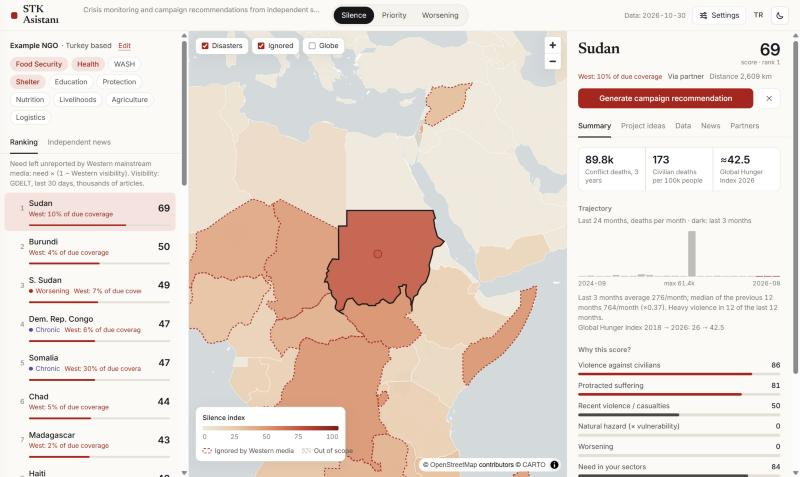
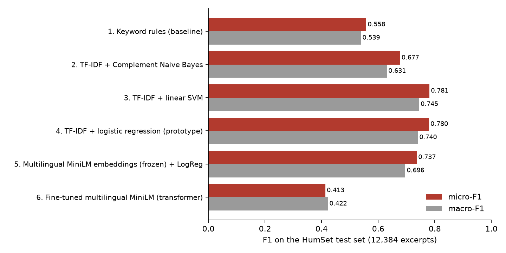
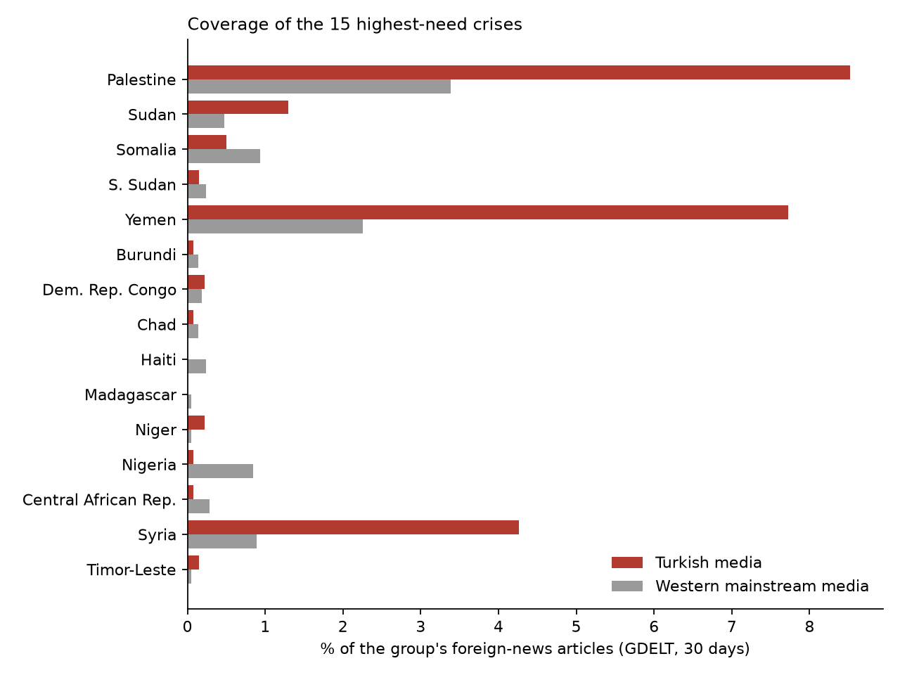
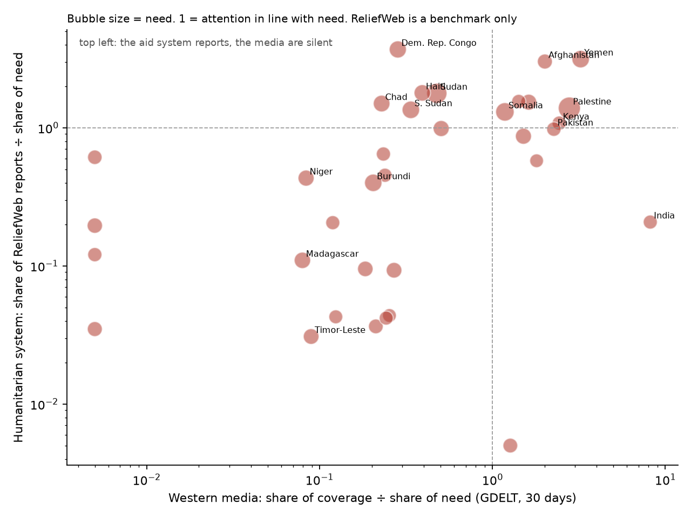

python app.py). A fresh clone already shows the map, campaign drafts and saved province profiles for the top-ranked countries.
STK Asistanı helps NGOs decide where to run their next aid campaign, what it should contain and with whom to partner, with a focus on crises that mainstream media ignore. The working prototype runs the full chain on real, current data:

Task and data. Multi-label classification of humanitarian text into 10 sectors (food, health, WASH, shelter, education, protection, nutrition, livelihoods, agriculture, logistics). Training data: HumSet (Fekih et al., 2022), expert-labelled excerpts in English, French and Spanish. All models are tested on the same official test split of 12,384 excerpts, and every learned model gets per-class decision thresholds tuned on the validation split, so the comparison is fair.
Metrics. One text can have several sectors, so accuracy is not meaningful. We use F1, the balance of precision and recall. Micro-F1 pools all decisions, so frequent sectors dominate it; macro-F1 averages the 10 sectors equally and shows whether rare sectors (logistics, agriculture) also work. We also report F1 per language.
| # | Approach | micro-F1 | macro-F1 | Note |
|---|---|---|---|---|
| 1 | Keyword rules | 0.558 | 0.539 | no learning, baseline |
| 2 | TF-IDF + Complement Naive Bayes | 0.677 | 0.631 | |
| 3 | TF-IDF + linear SVM | 0.781 | 0.745 | best, but no probabilities |
| 4 | TF-IDF + logistic regression | 0.780 | 0.740 | used in the app for EN/FR/ES |
| 5 | Multilingual sentence embeddings (frozen MiniLM) + LogReg | 0.737 | 0.696 | used in the app for TR/AR |
| 6 | Fine-tuned multilingual MiniLM transformer | 0.413 | 0.422 | laptop CPU: 12k excerpts, 2 epochs, 73 min |
| 7 | LLM zero-shot, DeepSeek V4.1 Flash | 0.818 | 0.717 | preliminary: 37 excerpts; model 4 on the same 37: 0.718 / 0.594 |

Which performed better and why. The linear models (SVM 0.781, logistic regression 0.780) were best on the full test set. HumSet excerpts are long and full of sector words (cholera, latrine, school), so word n-grams carry most of the signal, and with 100k+ labelled examples a linear model learns them well and retrains in about a minute, which our self-training loop needs. We keep logistic regression instead of SVM because it gives probabilities, which the dashboard uses. The frozen sentence-embedding model is about 4 points lower because it compresses each text into one 384-number vector. The fine-tuned transformer did badly because of our compute budget, not the method: on a laptop CPU we could train on only 10% of the data for 2 epochs, and the loss was still falling; we report this negative result instead of hiding it. The LLM, with no training at all, beat our model by about 10 points on the same 37 excerpts, but the free model hit its daily usage limit after 37 calls, so this is preliminary; the run resumes from its cache and the full 200 will be reported in Assignment 3. Even if the LLM is more accurate, it is too slow and rate-limited to label thousands of news items a day, so the app uses it only for writing campaign drafts, where a human checks the output.
HumSet has no Turkish or Arabic text, but our users read Turkish media and many crises are reported in Arabic. We machine-translated 300 English test excerpts with open OPUS-MT models (labels carry over; the excerpts were never seen in training) and scored every model in all three languages.
| micro-F1 | English | Turkish | Arabic |
|---|---|---|---|
| Keyword rules | 0.599 | 0.151 | 0.047 |
| TF-IDF + LogReg (Assignment 1 model) | 0.792 | 0.336 | 0.200 |
| Multilingual embeddings + LogReg | 0.732 | 0.699 | 0.704 |
| App: language router | 0.792 | 0.695 | 0.704 |
The Assignment 1 model could not read Turkish or Arabic. The app now detects the language of each text and sends EN/FR/ES to TF-IDF and Turkish/Arabic to the multilingual model, so it keeps the best score in every language. Limitation: machine translations are cleaner than real news; a small hand-labelled set of real Turkish and Arabic headlines is planned for Assignment 3.
Assignment 1 used need × (1 − attention), which treats ten articles about a catastrophe the same as ten articles about a small crisis. Now each crisis is compared with the coverage its need would justify:
coverage ratio = (country's share of Western foreign news) ÷ (country's share of total need)silence = need × (1 − min(coverage ratio, 1))Top of the ranking: Sudan (10% of due coverage), Burundi, South Sudan, DR Congo, Somalia, Chad, Madagascar, Niger, Haiti, Timor-Leste. Palestine receives 59% of its due coverage, Ukraine 346%. Attention now comes from GDELT instead of ~90 RSS items. The two samples agree well (attention ρ = 0.66; silence ranking ρ = 0.80; 8 of the top 10 identical), so the Assignment 1 finding holds.


Campaign and project drafts are written by DeepSeek V4.1 Flash, called through the official OpenCode command-line tool, so the repository contains no API key. The prompt allows only the facts we pass (numbers with named sources, verified partner candidates). A validator then removes partner names that are not in our candidate list and flags any number that does not appear in the facts. A human must approve every text. The free model has a daily usage limit; when it is unreachable the app shows the last saved draft for that country, labelled with the model that wrote it and re-validated against today's data, or a template. During development the free quota ran out: the Sudan (Turkish) draft was written by DeepSeek, and five more drafts were written by Claude Opus 5.5 using the same prompt and facts. Each one is labelled as such in the app and in the README.
| Feedback | What we did |
|---|---|
| Put the silence idea at the centre; simplify the rest | The app opens on the Silence view; silence is now relative to need; the yes/no flag became a coverage ratio. |
| Use GDELT | Western attention now comes from GDELT 2.0 (274,838 articles, 7,317 outlets, 30 days). |
| Use ReliefWeb and OCHA FTS | Both added as benchmarks only, never in the ranking, so the ranking stays independent of UN data. ReliefWeb: does the humanitarian system report on the crises the media ignore? OCHA FTS: does UN money reach them? (section 5) |
| Add Turkish media; compare with Western media | 8 Turkish outlets across the political spectrum (TRT Haber, AA, Hürriyet, Yeni Şafak, Sabah, Cumhuriyet, BirGün, bianet) plus Turkish GDELT outlets; comparison in section 5. |
| Test the classifier on Turkish and Arabic | New EN/TR/AR test set; language router in the app (section 3). |
| Interview 2–3 NGOs | We could not arrange interviews in this period. In Assignment 3 we replace them with structured persona tests (small Turkish NGO, international NGO, journalist, donor) and state clearly that this is a weaker form of user validation. |
| Discuss ranking sensitivity | First step done (GDELT vs RSS check, section 4); a full sensitivity analysis of the weights is planned for the Assignment 3 report. |
| Work package | What we will do | Output |
|---|---|---|
| Framing analysis (the core research question) | Beyond how much media cover a crisis, measure how: are victims named or only counted? Active (“were killed by”) or passive (“died”) voice? Who is quoted: officials, aid agencies or affected people? An LLM labels headlines from Western, Turkish and other outlets; we check it against ~100 hand-labelled headlines before trusting it. | framing scores per outlet group and crisis; accuracy of the LLM labeller |
| Persona tests (instead of NGO interviews) | Run fixed scenarios as four users: a small Turkish NGO (health, low budget), an international NGO, a journalist looking for under-reported stories, a donor. Record whether the ranking, country file and campaign draft are useful, correct and understandable for each. | test protocol and results table |
| Error and bias audit | Test with varied inputs (languages, sectors, excluded countries, missing data) and document every wrong, inconsistent, biased or misleading output, its cause and the fix. | error log with before/after |
| Ranking sensitivity | Change each weight and the outlet list within reasonable ranges and measure how stable the top 10 is (rank correlation, overlap). | sensitivity figure in the report |
| Model evaluation | Finish the 200-excerpt LLM comparison; label ~100 real Turkish and Arabic headlines to check the language router on real text. | updated tables |
| Final deliverables | Polished repository and README, 3–5 page final report, English presentation and a ~5-minute video. | submission |